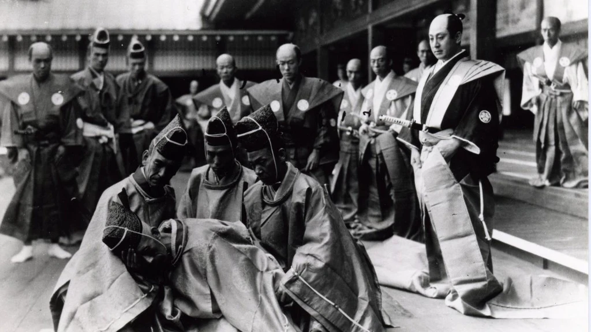

La película que se basa en una de las historias más populares en Japón conocida con el nombre de Chusingura, descrita por los japoneses como una “Leyenda Nacional”. Dicha leyenda comienza el 21 de abril del año 1701 cuando Asano Naganori, el daimyo (soberano feudal) del dominio de Akō, un pequeño feudo entre Okayama y Himeji, en Japón, es forzado a quitarse la vida ( el harakiri o seppuku) por atacar y tratar de matar a Kira Yoshimaka en el palacio del shogun, en Tokio Los samuráis que estaban a su servicio se convirtieron entonces en Ronin, y 47 de ellos buscaron vengar a su antiguo amo y maestro. Un año demoraron en planear su ataque y el 14 de diciembre de 1.702 entraron en la residencia de Yoshinaka y lo asesinaron. Dicho grupo es conocido como los 47 Ronin.
En 1941 la misma historia fue llevada al cine bajo la dirección de Kenji Mizoguchi, quien empezaría su carrera como actor haciendo papeles de mujer y luego se convertiría en director.
En esta nueva versión, en una aldea aparece un joven que viene escapando de unos extraños monjes con unas extrañas marcas en la cabeza, marcas que son tomadas como un presagio, el joven es adoptado pero no aceptado como parte del pueblo, puede vivir con ellos pero nunca será como ellos o igual a ellos , Kai es un mestizo mitad japonés mitad inglés, con una especial conexión con la naturaleza y con una técnica de arte marcial muy particular, Kai se enamora de la Princesa Mika, la cual es raptada por Lord Kira después de obligar a su padre a suicidarse. Los samurais que estaban a su cargo deciden vengarse y forman un grupo al que deciden incluir a Kai.
Con unos efectos especiales increíbles como el de la bruja, el enorme guerrero o el dragón, y escenas de acción con miles de réplicas de katanas y wakizashis (se hicieron más de 600) perfectamente elaboradas, los kimonos, las armaduras y los maquillajes conservan la autenticidad de la época. En detalles la película es perfecta.
Opinion de la pelicula

El filme es muy bueno, algo que me gusto mucho fue la reconstrucción de la mentalidad feudal japonesa (eso fue brillante). Y la película exige al espectador que se olvide de su mentalidad occidental actual. La idea de la muerte honorable como premio está ahí todo el metraje. La obsesión por el honor. La jerarquía. El servir a tu señor, y el ser un buen señor. Si no se hace ese ejercicio, si se la mira desde nuestra propia cultura y nuestros valores, se acabará como la señora que tenía detrás en el cine. Incómoda, sin entrar en la historia, juzgando con los personajes.
Esa reconstrucción de la que hablo se sostiene especialmente sobre las excelentes interpretaciones de los actores, y muy en concreto sobre Ko Shibasaki (Mika). Incluso Keanu Reeves (Kai), aunque sigue sin tener más de tres expresiones faciales, consigue una interpretación aceptable. Todo lo que no ha logrado en cuanto a expresividad facial, lo consigue con la posición corporal. Esto se ve sobre todo en las escenas con Shibasaki, en las que las miradas se buscan, a la vez que rehuyen el contacto visual.
El ritmo es contenido, como si estuviese luchando por no liberar bruscamente toda la violencia que late en la historia. Y esa tensión se libera, por supuesto, en una catarsis final que tiene más de coreografía que de lucha sin sentido. Mucho más parecida al cine de acción japonés que al norteamericano. Más Kitano que Emmerich, para entendernos.
Todo ello, en conjunto, consigue que las dos horas de película pasen agradablemente, y que uno salga del cine con la sensación de haber visto una historia bien contada.